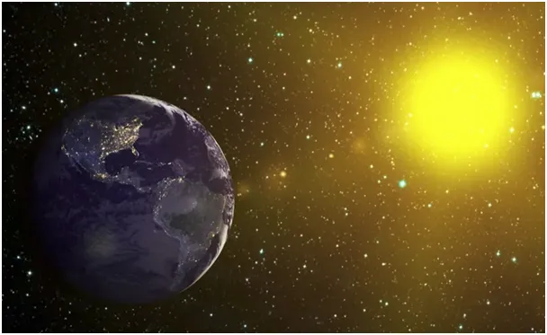
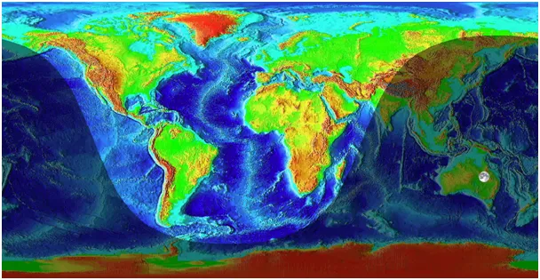
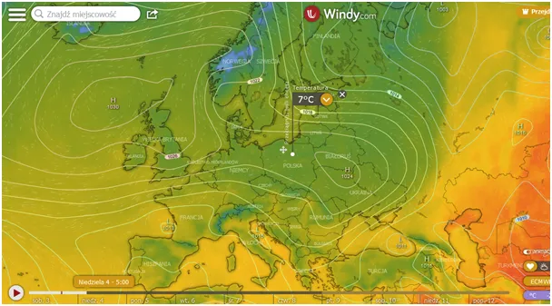

My sami w kosmicznie zimnym wszechświecie
Rześkie poranki bez rosy zmuszają do refleksji, gdy przez kolejne dni czerwca od rana trzeba być dobrze ubranym. 7 st. C dwie godziny po wschodzie Słońca! Co to ma być? To kapryśna pogoda. Wiemy, że zima w Arktyce ciągle nam przysyła zimne podmuchy. Skąd one się biorą? Z głębokiego Kosmosu! A dokładnie to nie zimno przychodzi z Kosmosu tylko ciepło, które dostajemy od Słońca, ucieka w Kosmos, gdy jest noc lub nawet w dzień, gdy kąt padania promieni słonecznych jest zbyt mały. Obecnie Słońce świeci pionowo nad południowym Egiptem, cały obszar polarny to arktyczny dzień a mimo to doświadczamy lokalnie chłodu. Ziemia jest kulą i w każdej chwili dokładnie jej połowa jest oświetlona przez Słońce a połowa nie. Przez pół roku biegun północny był w strefie cienia i całe ciepło tam docierające z prądami morskimi i wiatrami umykało na zawsze w Kosmos. Ucieczka energii jest szybsza, gdy nie ma chmur nocą. Wyże stojące nad Europą właśnie dają taki efekt.

Na Ziemię trzeba patrzeć jak na bufor, przez który słoneczna energia przechodzi ze strony oświetlonej, podgrzewa oceany i grunt a potem wtórnie powietrze. Potem nocą, czyli z drugiej strony kulistej sfery ucieka w postaci fal podczerwonych w bezkresny Kosmos i stygnie. Obrót ziemskiego globu trwa 24 h, dwa razy wolniej niż mała wskazówka zegara, czyli całkiem wolno, ale w sposób zauważalny. Obejrzymy dobry film i w dwie godziny Warszawa jest tam, gdzie wcześniej był Dublin.

Bardzo złożony system ocean-atmosfera powoduję, że mamy temperatury, w których może trwać życie, jednym z tych niezbędnych cudów jest efekt cieplarniany.

Łączny bilans ciepła na globie to 0%, tyle wpada ile ucieka, efekt cieplarniany i głównie bezwładność termiczna oceanów powodują, że nie mamy między dniem i nocą różnic temperatur o 250 st. C, jak to jest na Księżycu, w dzień plus 120 st. C w nocy minus 130 st. C. Jedno z podstawowych praw termodynamiki mówi, że im ciało cieplejsze, tym więcej energii wypromieniowuje. To prawo zapewnia efekt homeostazy, jeśli planeta z jednej strony więcej przyjmie to z drugiej strony więcej odda a o tym, ile wchodzi a ile wychodzi decydują głównie chmury. Jak sądzę mamy anomalię i epoka lodowcowa nam nie grozi, bo w Kanadzie cieplutko.
Paweł Klimczewski